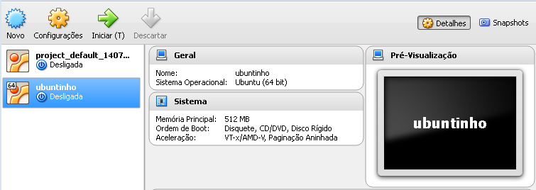

Conforme vai usando o Vagrant surje a necessidade de se ter sua própria Base Box para poder compartilhar o seu ambiente de desenvolvimento ou mesmo para provisionar um ambiente virtual.
Se você é gestor ou líder, provavelmente precisa que algum funcionário novo tenha seu ambiente de desenvolvimento configurado rápidamente e para isso também vai precisar de sua própria Base Box.
Fazer isso não é dicífil, vamos ao passo a passo:
Configurações importantes no VBox
OBS: A quantidade de memória fica a seu critério escolher quanto vai. Eu deixei 512 simplesmente por não precisar mais que isso para os testes.
Para o tipo de disco rígido tem de ser VMDK

Deixe dinamicamente alocado para que a VM não acabe com o seu espaço em disco logo de cara. Se tiver um HD de 1 Tera no hospedeiro(Servidor ou seu PC) e colocar o HD Virtual de 500GB sem ser dinamicamente alocado, logo de cara vai perder 500 GB do seu HD. Se for dinamicamente alocado ele vai consumindo espaço conforme vai precisando.
A configuração de rede deve ficar como NAT.

Carregue o S.O. normalmente e instale conforme suas necessidades. Porém, por convenção, usuário e senha devem ser vagrant.
Configurando um servidor Ubuntu como VM
Instale o VBox Guest Additions na VM.
|
|
“Coloque o CD do Guest Additions”

Em seguida execute:
|
|
Atualize o S.O.
|
|
Adicione o usuário Vagrant ao grupo sudoers
|
|
Vai abrir um arquivo no Terminal, no final do arquivo, adicione a seguinte linha:
|
|
Instalando uma chave pública
|
|
Instalar e configurar o Servidor OpenSSH
|
|
Localize no documento as seguintes configurações deixe conforme esse exemplo:
|
|
Salve e feche o arquivo e, então, reinicie o serviço de SSH
|
|
Desligue a máquina virtual.
Elimine tudo o que sua máquina não irá precisar - Audio, USB, etc. Deixe somente o necessário.
Agora é só gerar o Box com os comandos:
|
|
Ex.:
Máquina Virtual:

Comando para exportar:
|
|
Então execute no seu próprio computador/servidor:
|
|
Será criado um arquivo package.box no diretório onde você rodou o comando - Ex: Se no seu terminal está assim: usuario@host:/home, o arquivo será gerado na pasta home, se for no Windows e estiver assim: C:\Users\Seu Usuário, será criado na pasta do seu usuário.
Agora uma dica bonus!
O Luís Henrique do Grupo Web Design Brasil no Facebook, me apresentou uma outra facilidade para configuração da box no Vagrant, o PuPHPet, um site onde você vai escolhendo as configurações que você deseja para seu servidor e ele gera um arquivo de configurações do Puppet pra você - Tudo no automático, olha que maravilha.
Tem, também, um outro que eu já uso que é o Rove, porém esse gera a configuração para o Chef.
Com esses arquivos de configuração em mãos, é só deixá-los na pasta do projeto onde você vai subir o ambiente e rodar o vagrant up. Pronto! Tudo no esquema pra você começar a desenvolver.
Referências:
https://docs.vagrantup.com/v2/boxes/base.html
http://aruizca.com/steps-to-create-a-vagrant-base-box-with-ubuntu-14-04-desktop-gui-and-virtualbox/
Se você curtiu a dica, compartilha, se ficou com alguma dúvida, estou a disposição, pode deixar sua dúvida nos comentários.